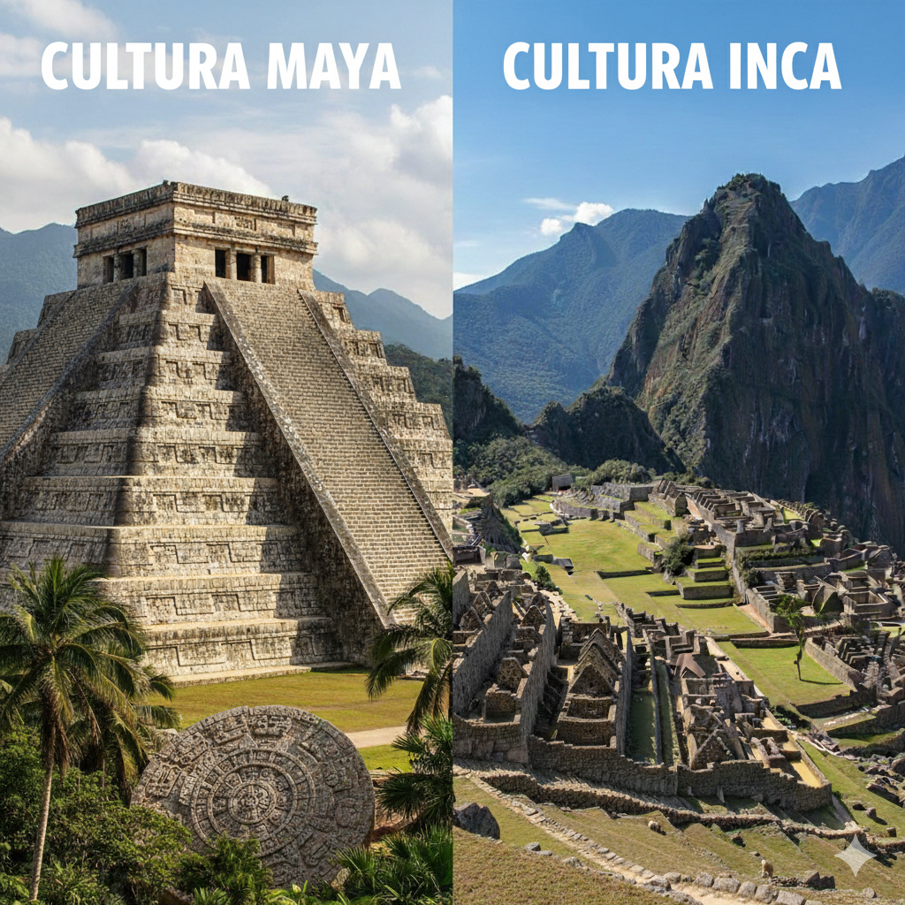

Tema 1: Los Mayas e Incas
Antes de la llegada de los europeos, América estaba habitada por civilizaciones muy avanzadas, entre las que destacaron los mayas y los incas. Los mayas, ubicados en Mesoamérica, desarrollaron grandes conocimientos en astronomía, matemáticas y un sistema de escritura jeroglífica. Construyeron ciudades ceremoniales con pirámides y templos que demostraban su alto nivel científico y arquitectónico.
La cultura maya fue una de las civilizaciones más avanzadas de América antes de la llegada de los europeos. Se destacó por sus grandes conocimientos en astronomía, ya que podían predecir eclipses y crear calendarios muy precisos. También desarrollaron un sistema matemático avanzado, donde usaron el número cero mucho antes que otras culturas del mundo. Además, construyeron impresionantes ciudades ceremoniales, templos y pirámides en lugares como Tikal, Palenque y Chichén Itzá. Su escritura jeroglífica, su arte y su arquitectura muestran el alto nivel cultural que alcanzaron.
La cultura inca fue una de las civilizaciones más importantes de América del Sur antes de la llegada de los españoles. Se desarrolló en los Andes y creó un gran imperio llamado Tahuantinsuyo, que se extendía por Perú, Ecuador, Bolivia, Chile y Argentina. Los incas destacaron por su excelente organización política, su sistema de caminos (el Qhapaq Ñan), y su capacidad para construir ciudades y templos de piedra con gran precisión, como Machu Picchu y Cuzco. También desarrollaron una agricultura avanzada con terrazas y sistemas de riego, y usaron el quipu, un sistema de cuerdas con nudos para llevar registros. Su sociedad estaba muy organizada y dirigida por el Inca, considerado hijo del Sol.

Calendario Maya
Sistema astronómico extremadamente preciso basado en ciclos solares y rituales.
Ciudades-Estado
Centros como Tikal y Chichén Itzá con gobierno independiente.
Arquitectura Maya
Pirámides escalonadas alineadas con fenómenos astronómicos.
El Quipu
Sistema de cuerdas y nudos para organizar información del imperio.
Andenes
Terrazas agrícolas que evitaban erosión y mejoraban la producción.
Ingeniería Inca
Construcciones con bloques de piedra encajados sin mortero, resistentes a terremotos. Machu Picchu es su máximo ejemplo.